Works14 artworks

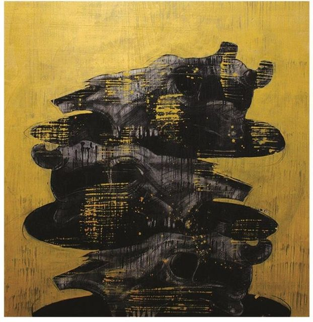

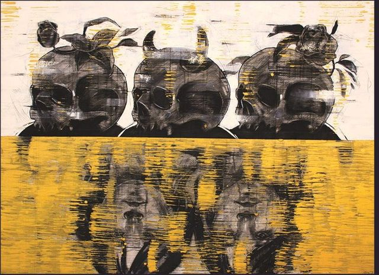

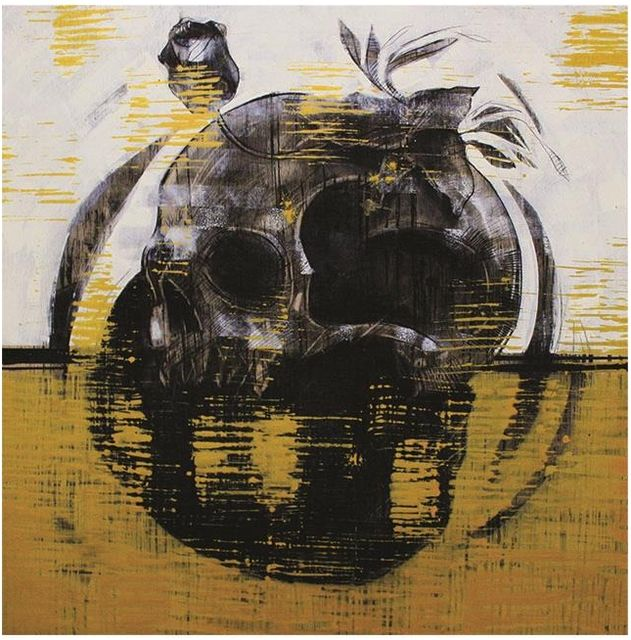

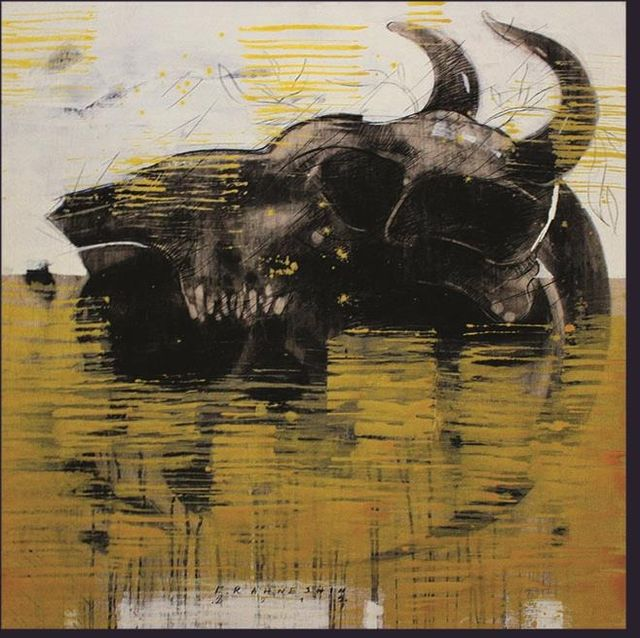

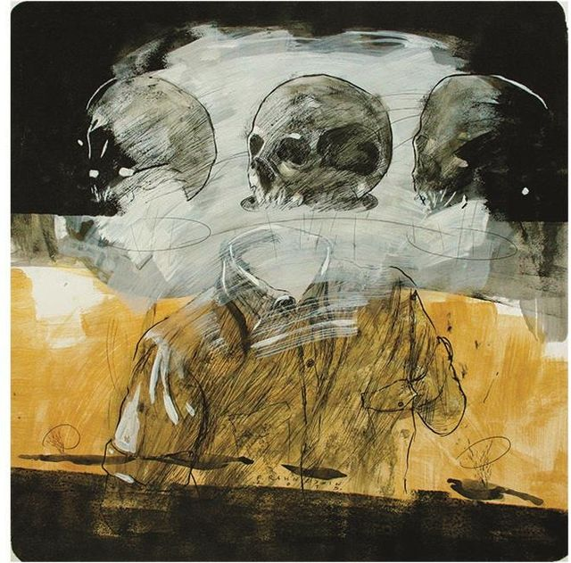

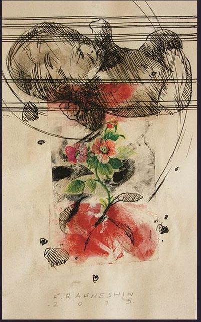

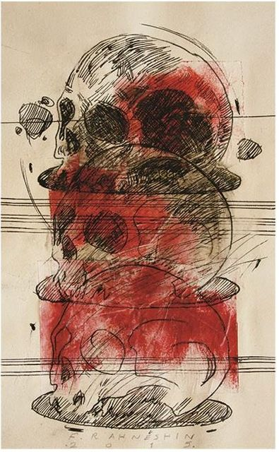

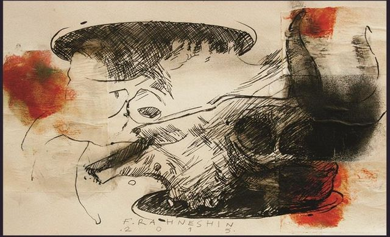

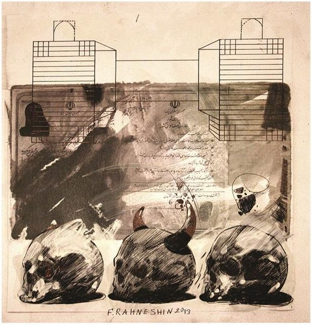

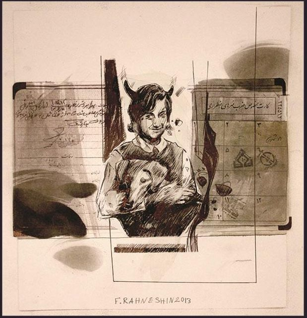

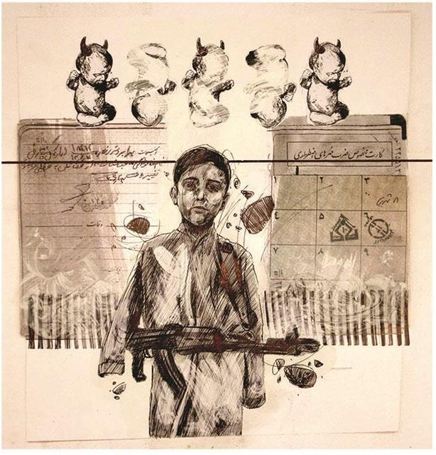

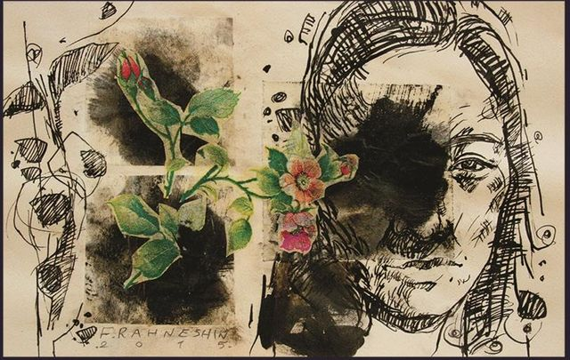

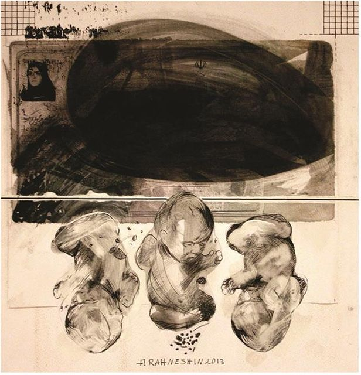

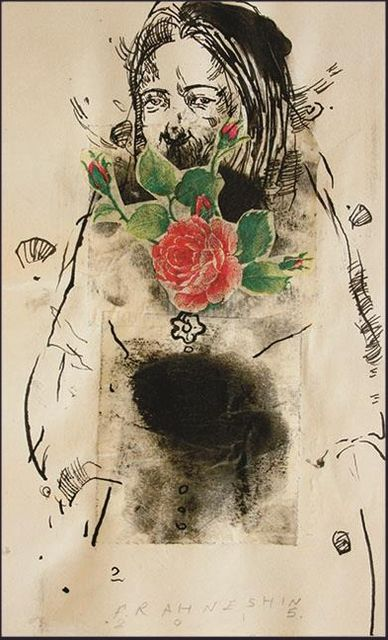
History of experienceBiography · education · exhibitions · awards
Education
- 2014MA, Painting, Azad University|Tehran – Iran
- 2012BA, Painting, Azad University|Tabriz – Iran
Solo exhibitions
- 2015O Gallery|Tehran – Iran
- 2014Galeri Eksen|Istanbul-Turkey
- 2012Hoor Gallery|Tehran – Iran
- 2010Laleh Gallery|Tehran – Iran
Selected group exhibitions
- 2014Galeri Eksen|Istanbul-Turkey
- 2014Versus, Iranian Artists' Form|Tehran – Iran
- 2013Iranian Artists' Form|Tehran – Iran
- 2013Hoor Gallery|Tehran – Iran
- 2011Hoom Gallery|Tehran – Iran
- 2010Nasl-e No, Pardis and Homa Galleries|Tehran – Iran
Awards
- 2012Emerging Artist Award|Dubai-UAE
- 20122nd, Gorgan Youth Festival|Gorgan – Iran
- 20122nd, International Festival of Visual Arts|Gorgan – Iran
- 20114th Fajr Festival|Tehran – Iran
- 2010Nasl-e No, Pardis Gallery|Tehran – Iran
Source: the Sobhan Gallery artist catalogue “Sobahn Gallery. C. Farzin Rahneshin.pdf”.